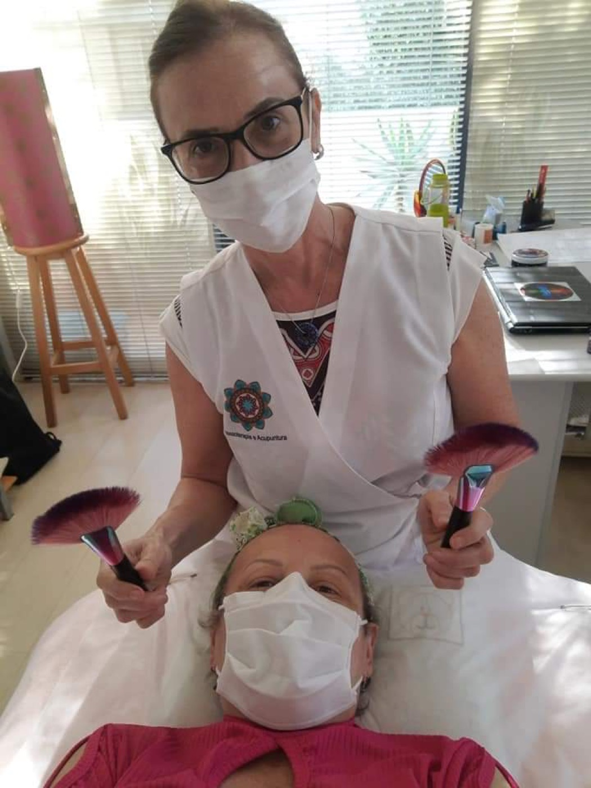

Um toque seguro e suave para quem enfrenta o câncer. Aliviar a dor do corpo para que o coração descanse um pouco.

A Masso Onco é uma abordagem de manobras e toques adaptados especialmente para pessoas em tratamento ou em recuperação do câncer. Cada movimento das mãos respeita as condições do corpo naquele momento, a pressão é suave e segura, sempre alinhada às orientações da equipe médica e do próprio paciente (através de uma anamnese minuciosa).
Rosana é pioneira nessa abordagem no Brasil e tem muita prática. Mais do que conhecimento técnico, ela traz uma escuta delicada para entender o que o corpo suporta e o que a sua alma precisa.
"Seu corpo pede acolhimento. E acolher é cuidar de cada detalhe, com segurança e carinho."